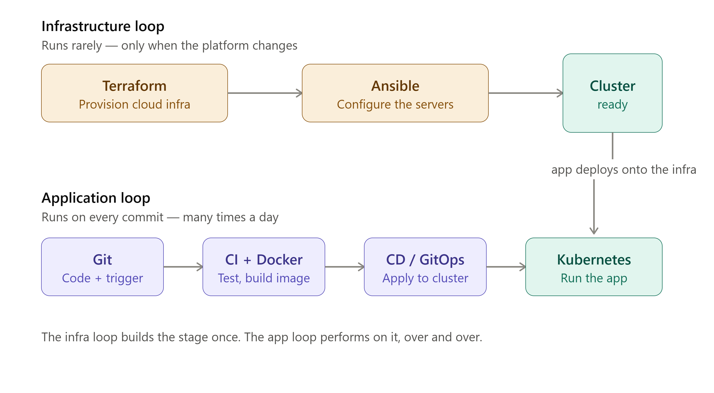

The DevOps Engineer's Handbook¶
From absolute beginner to production-grade engineer — a mentorship program, not a tool tour¶
Who this is for: you, starting from zero, aiming to think and operate like a DevOps/SRE engineer with 2.5–3 years of real production experience.
The promise: by the end you will not just know Terraform, Docker, and Kubernetes — you will understand why each exists, what it replaced, where it runs, who owns it, and how it hands off to the next system. You will be able to draw the whole production stack on a whiteboard and reason about failure at every hop.
0. How to read this handbook¶
This is a book, not a pile of notes. Read it in order the first time — each module deliberately builds the mental model the next one assumes. After the first pass, use it as a reference: the Glossary and Interview Bank are designed for pre-interview review.
🗺️ Naye ho? Ek plan lo. Bina schedule ke log beech me chhod dete hain. Follow the Study Plan (12-week ya 6-week track) aur apni Progress tick karte jao — visible progress hi motivation hai. Repo front-door: README. Job tak pahunchne ke liye: 18 — Job-Ready.
Three learning modes, use whichever fits your moment:
| Mode | What you do | Which files |
|---|---|---|
| 🧠 Understand | Read the full module, do the lab | 01–13 module chapters |
| ⚡ Recall | Skim summaries, memory hooks, quiz | Each module's Summary + Memory shortcuts |
| 🎯 Interview | Rapid-fire Q&A, war stories | 14-interview-bank + Glossary error-reflex table |
| 🔁 Remember for life | Recall gates, flashcards, spaced review | Every chapter's ↩️ Recall gate + 17-flashcards |
A note on language. Explanations are in plain English. Where a Hindi/Hinglish one-liner makes a concept stick faster, it is included in a 🇮🇳 Hinglish intuition callout. This is deliberate — intuition in your first language wires the memory faster; the English is what you'll say in an interview.
0.1 How to remember this for life — the spaced-review system¶
Padhna aur yaad rakhna do alag cheezein hain. Yeh handbook is tarah bana hai ki ek baar theek se padho, phir zindagi bhar yaad rahe — par uske liye teen aadatein chahiye (yeh retention science se aayi hain, marketing se nahi):
1. Har learning chapter ke shuru me ↩️ Recall gate. 3 sawaal — pichhle modules se. Neeche kuch padho usse pehle, memory se jawab do. Yeh active recall hai: dobara nikaalna (retrieve), dobara padhna nahi. Memory retrieve karne se pakki hoti hai, re-read karne se nahi.
2. Har quiz aur recall gate ka jawab <details markdown="1"> me chhupa hai. Pehle khud socho, phir kholo. Agar galat nikla — wahi cheez sabse achhe se yaad rahegi. Isko desirable difficulty kehte hain: thodi takleef = pakki yaad.
3. Spaced review — badhte gap pe dobara milo:
| Kab | Kya karo | Time |
|---|---|---|
| Day 0 | Chapter padho + lab karo | 45–90 min |
| Day 1 | Sirf us chapter ka Recall gate + quiz, memory se | 5 min |
| Day 3 | Us module ke flashcards chalao | 5 min |
| Day 7 | Agle chapter ka Recall gate (jo isi ko dobara test karta hai) | built-in |
| Day 30 | Blank page pe 2 loops + 8 bridges + 5 threads banao (see 09) | 10 min |
🇮🇳 Hinglish intuition: Memory ek gym hai. Ek baar bhaari weight uthana (padhna) muscle nahi banata — baar-baar, badhte gap pe uthana banata hai. Recall gates + flashcards = tumhare reps. Bina reps ke, chapter 3 hafte me bhool jaoge.
Flashcard deck → 17-flashcards.md: har module ke sabse zaroori Q→A, Hinglish me. Anki me import karke roz 5 min chalao — yehi ek aadat sabse zyada lifetime retention deti hai.
1. The mental model everything hangs on: Two Loops¶
Before any tool, hold this picture. Every DevOps system on earth is two feedback loops that share one Git repository.
┌──────────────────────────────────────────┐
│ GIT (source of truth) │
└───────────────┬──────────────┬───────────┘
│ │
┌───────────────────────────▼──┐ ┌──▼───────────────────────────┐
│ OUTER LOOP — "build the │ │ INNER LOOP — "ship the app" │
│ house" (INFRASTRUCTURE) │ │ (APPLICATION / DELIVERY) │
│ │ │ │
│ Terraform → Cloud (VPC, EC2, │ │ Code → CI (test+build) → │
│ RDS, ECR) → Ansible │ │ image → registry → manifest │
│ (configure hosts, kubeadm) │ │ update → GitOps → Kubernetes │
│ │ │ → Service → Ingress → Users │
│ RUNS RARELY (setup / change) │ │ RUNS EVERY PUSH (many/day) │
│ "Pets" — built with care │ │ "Cattle" — disposable pods │
└───────────────────────────────┘ └───────────────────────────────┘
- The outer loop builds and configures the place things run. It runs when infrastructure changes — rarely, carefully. Terraform + Ansible live here.
- The inner loop ships the application into that place. It runs on every
git push— often, automatically. CI/CD + GitOps + Kubernetes live here. - Git is the seam between them. Both loops read desired state from Git and reconcile reality toward it. Hold onto the word reconcile — it is the single most important idea in this book (see 09-connected-system).
🇮🇳 Hinglish intuition: Outer loop = ghar aur kitchen taiyaar karo (ek baar). Inner loop = dish banao aur serve karo (baar-baar, har order pe).

Figure: the Two Loops mental model. Outer = build the place things run (Terraform + Ansible, "Pets"); inner = ship the app into it (CI → Argo → Kubernetes, "Cattle"); Git is the shared brain both loops reconcile toward.
Full-resolution versions of these diagrams live in the repo root: devops_two_loops_mental_model.png, two_loops_infra_vs_app.png, full_production_flow_end_to_end.png, kubernetes_controller_chain.png.
2. The end-to-end connection chain¶
Two sentences you should be able to expand into a 20-minute whiteboard talk by the end of this book:
Setup (outer loop):
Terraform → Cloud → Compute → Config Mgmt (Ansible) → Container runtime → Kubernetes cluster.Delivery (inner loop):
Git push → CI/CD → Docker image → Registry → Manifest update → GitOps (Argo) → Kubernetes → Service → Ingress → Load Balancer → DNS → Users.
Every module tells you exactly which arrow it owns and what it hands to the next box. Those handoffs are the 8 Bridges — the joints of the whole system.
3. The curriculum¶
Part 0 — Pre-flight (naye ho? yahin se shuru karo)¶
The ground floor the rest of the book assumes. Skip only if you're already comfortable with the terminal, Git, YAML, HTTP, and a cloud account. | # | Module | Core question it answers | |---|--------|--------------------------| | 00a | Pre-flight: the ground floor | What is a terminal, YAML, Git, an HTTP request, a CIDR block — the plumbing every later chapter assumes? | | 00b | Setup runbook | How do I install the whole toolchain (WSL, Docker, Terraform, kubectl, AWS CLI) and create a safe AWS account? | | 21 | Linux: the ground everything runs on | Navigate/read/edit files, debug a slow-or-down server, mine logs with pipes — the hands-on command toolkit every DevOps role assumes. |
Part I — Foundations & the core toolchain (absolute beginner → intermediate)¶
| # | Module | Core production question it answers |
|---|---|---|
| 01 | M0 — Foundations & Mental Model | What is DevOps actually solving, and how do I reason about a system I've never seen? |
| 02 | M1 — Terraform & Infrastructure as Code | How do I create cloud infrastructure repeatably, without clicking in a console? |
| 03 | M2 — Ansible & Configuration Management | The server exists — how do I configure what's inside it, identically every time? |
| 04 | M3 — Docker & Containers | How do I package an app so it runs the same on my laptop and in production? |
| 05 | M4 — Kubernetes Core | How do I run many containers reliably, self-healing, across many machines? |
| 06 | M5 — Sizing, Capacity & Cost | How big should the machines be, and how do I not set money on fire? |
| 07 | M6 — CI/CD Pipelines | How does a git push become a tested, built, pushed image with zero manual steps? |
| 08 | M7 — GitOps & Argo CD | How does the cluster pull the right version from Git and heal itself when it drifts? |
Part II — Systems thinking (the glue)¶
| # | Module | Core production question it answers |
|---|---|---|
| 09 | The Connected System | How do all 7 tools actually hand off to each other, end to end? |
| 26 | Kubernetes Objects — How They All Connect | Objects feel disconnected? One idea, one master map, 5 buckets — read once and the whole picture clicks. |
| 27 | 10-Day Learning Plan (understand) | Sab pata hai par jodd nahi paaye? Ek restaurant analogy se poora DevOps connect — first-pass mental map. |
| 29 | 10-Day Confidence Sprint (drill) | Concepts clear ho gaye? Ab padhna band — revise · do · prove. Har concept apne VANTA + Billfree projects pe karke confidence banao. |
| 19 | Follow One Commit (hands-on CI/CD) | Trace a single git push through CI → scan → registry → GitOps → rolling update → observe. |
Part III — Operate like a senior (intermediate → production)¶
| # | Module | Core production question it answers |
|---|---|---|
| 10 | M8 — Observability & SRE | It's 2 a.m. and something is slow — how do I see inside a running system? |
| 11 | M9 — Advanced Kubernetes Internals | Probes, QoS, DNS, graceful shutdown, HPA, RBAC, Ingress — what really happens inside? |
| 23 | Production Incident Playbook | It's on fire in prod — what do I run, in what order, to fix it? 26 real issues (CrashLoop, 502, OOM, PVC Pending, state-lock, AccessDenied, DB…) with symptom → diagnose → fix → prevent. |
Part IV — Prove it (capstone)¶
| # | Module | Core production question it answers |
|---|---|---|
| 12 | Capstone I — URL Shortener | Can I build the whole stack end-to-end, from empty AWS account to live URL? |
| 13 | Capstone II — MicroShop | Can I do it with real microservices, inter-service DNS, and matrix CI? |
Part V — Interview, roadmap, reference¶
| # | Module | Purpose |
|---|---|---|
| 14 | Interview Bank | 40+ production-grade Q&A + 19 real lab war-stories |
| 20 | Confusions & Trade-offs (X-vs-Y) | The small distinctions interviewers probe: SG vs NACL, EBS/EFS/S3, RDS vs DynamoDB, RED vs USE, blue-green vs canary, merge vs rebase, AWS↔Azure |
| 22 | Command Cheat-Sheets & Labs | The "terminal-open" muscle-memory reference: Git · Docker · kubectl · Ansible · Terraform · ArgoCD · Jenkins — commands, mini-labs, and interview one-liners |
| 15 | Principal Track roadmap (M11–M18) | Incident response, progressive delivery, distributed systems, security, FinOps, platform engineering |
| 16 | Reference Appendix | Glossary (80+ terms), error→cause reflex table, troubleshooting quick-ref, sizing quick-ref, command cheat-sheets |
| 17 | Flashcard deck | Every module's must-remember Q→A in Hinglish — Anki-importable, for daily spaced repetition (see §0.1) |
| 18 | Career / Job-Ready | Turn the handbook into a job: portfolio, resume bullets, interview scripts, 2-week sprint, salary ranges |
Part VI — The Production Gauntlet (build → break → fix)¶
| # | Module | Core production question it answers |
|---|---|---|
| 24 | Build the Real System | Can I take one real service ("ShopFast") from empty repo to production on AWS+K8s — with every small process (IaC, GitOps, TLS, secrets, HPA, PDB, NetworkPolicy, backups, alerts) done right? |
| 25 | Chaos Engineering — break & fix | Would I rather find the failure on a game-day or at 2 a.m.? 12 chaos experiments → diagnose → fix like a senior SRE. |
4. The lesson template (what every module chapter contains)¶
Every Part I–III module is written to the same skeleton, so you always know where to look:
- Core question + 60-second version — the one-paragraph "why you're here."
- Why this exists / what it replaced — the evolution. You never meet a tool without meeting the pain it was born to kill.
- Concepts, each covered as: What it is · Why it exists · Where it runs · Who owns it · Inputs & outputs · How it connects · Common failures · Troubleshooting · Interview insight · Best practice.
- ASCII diagrams — architecture, flow, lifecycle.
- Real production example — how it actually shows up on the job.
- Commands, explained — never a command without why.
- Beginner mistakes vs Senior insights — the gap this book is closing.
- Memory shortcuts — the hooks that survive to interview day.
- ↩️ Recall gate (top, from earlier modules) → Summary → Self-check quiz (answers hidden in
<details markdown="1">— memory se pehle) → Hands-on lab (with a ✅ success looks like check) → Interview questions → Production challenge.
5. The 5 Golden Threads (read these five times)¶
These ideas recur in every module. Spot them everywhere and the toolchain collapses from "9 things to memorize" into "1 idea, 9 costumes." Full treatment in 09-connected-system.
| # | Thread | One-line | Shows up in |
|---|---|---|---|
| 1 | Reconciliation | A loop constantly drives current state toward desired state. | Terraform, Ansible, Kubernetes, Argo CD |
| 2 | State outside, compute disposable | Keep state (DB, tfstate) outside; then servers/pods are throwaway "cattle." | tfstate in S3, stateless pods, Spot instances |
| 3 | Preview before apply | Always dry-run before you change reality. | terraform plan, ansible --check, kubectl --dry-run, CI test gate |
| 4 | Push vs Pull | Who initiates the change — the doer, or the target? | Ansible/CI = push; Argo CD = pull; Git = the middle |
| 5 | Idempotent | Running it again changes nothing new. SET, not +=. |
Every tool in this book |
6. Source & provenance¶
This handbook consolidates and de-duplicates ~20 prior working documents (field manuals, bootcamp notes, glossaries, capstone deep-dives, and lab gotchas). The originals are preserved unchanged in _source-archive/ for reference.
New to the terminal, Git, or the cloud? Start at 00a — Pre-flight, then 00b — Setup. Already comfortable with the basics? Jump straight to 01 — M0: Foundations & Mental Model.